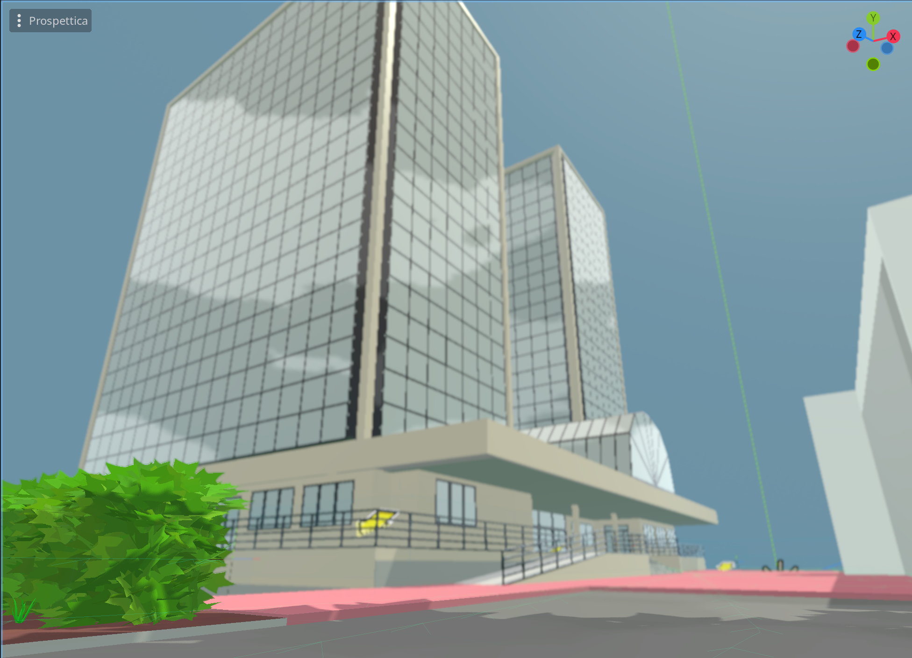

Due progetti universitari, due domini molto diversi: un serious game per l'orientamento e un sistema di raccomandazione basato su ontologie.
Godot EngineGDScriptBlenderGame Design
Tears of the Campus
L'ambiente reale del dipartimento

La stessa vista, ricostruita in Blender
Tesi di laurea triennale
Un serious game pensato per orientare studentesse e studenti alle prime armi con la vita universitaria. Il giocatore esplora ricostruzioni 3D fedeli agli spazi reali del dipartimento, modellate in Blender a partire da foto e planimetrie, e affronta quest ispirate a procedure vere: iscrizione, prestito bibliotecario, ricevimento con i docenti.
Il cuore del gameplay è Enroll Battle, un duello a turni in stile Pokémon contro la segreteria amministrativa, pensato per trasformare l'ansia da burocrazia in curiosità. Oggetti collezionabili sparsi per la mappa aggiungono un livello narrativo e motivazionale al percorso.
Un sistema esperto per aiutare i giocatori meno esperti a costruire mazzi nel Pokémon Trading Card Game. Al centro c'è un'ontologia OWL del dominio (carte, mazzi, zone di gioco, regole), validata con vincoli SHACL e arricchita da regole SWRL che inferiscono la validità di azioni ed evoluzioni.
Sopra questa base di conoscenza, un motore di raccomandazione usa il clustering non supervisionato dei mazzi (K-Means, Agglomerative, DBSCAN, BIRCH) per suggerire le carte mancanti a partire da un mazzo incompleto, valutato tramite masked prediction sui dati di tornei reali.